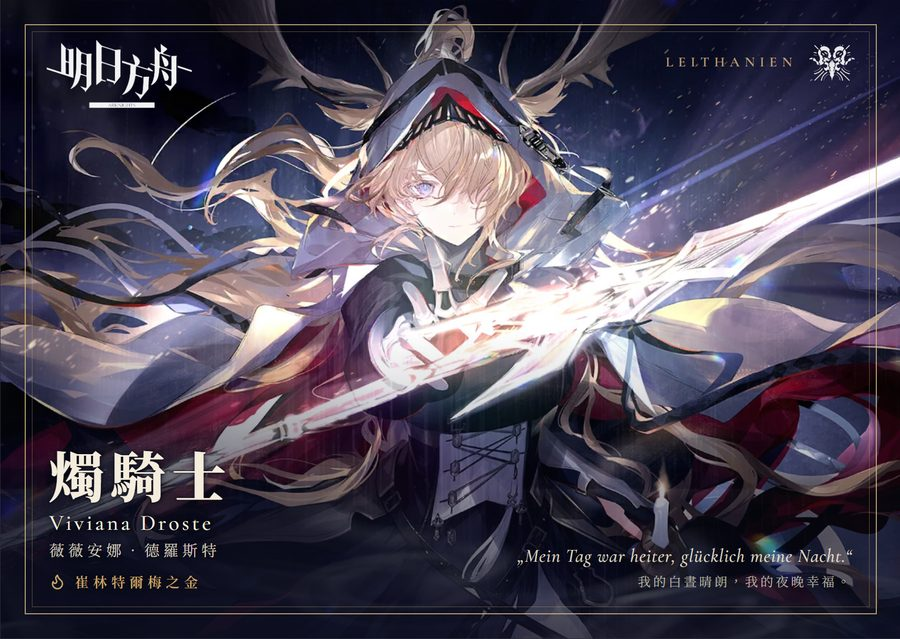
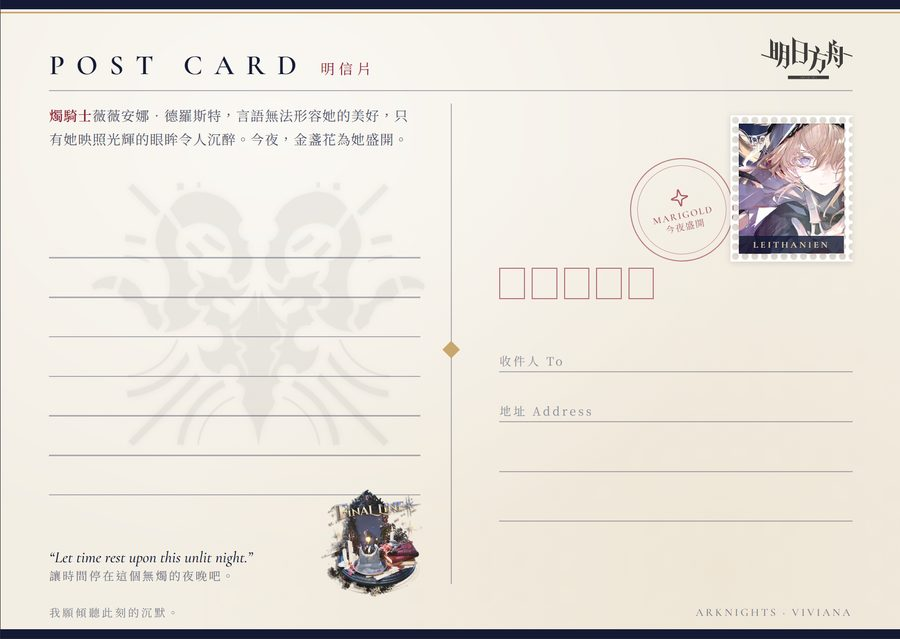
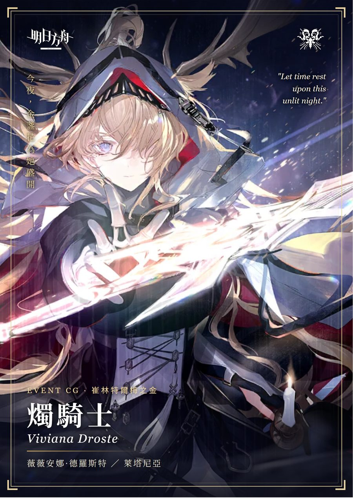
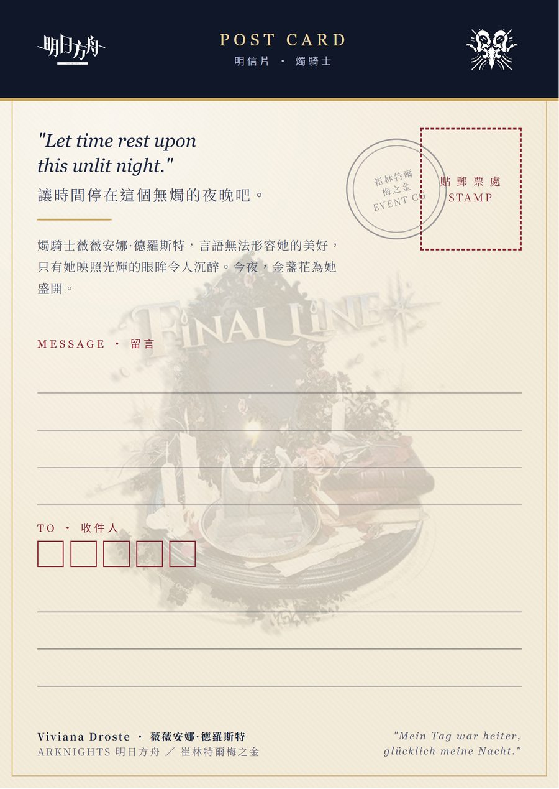
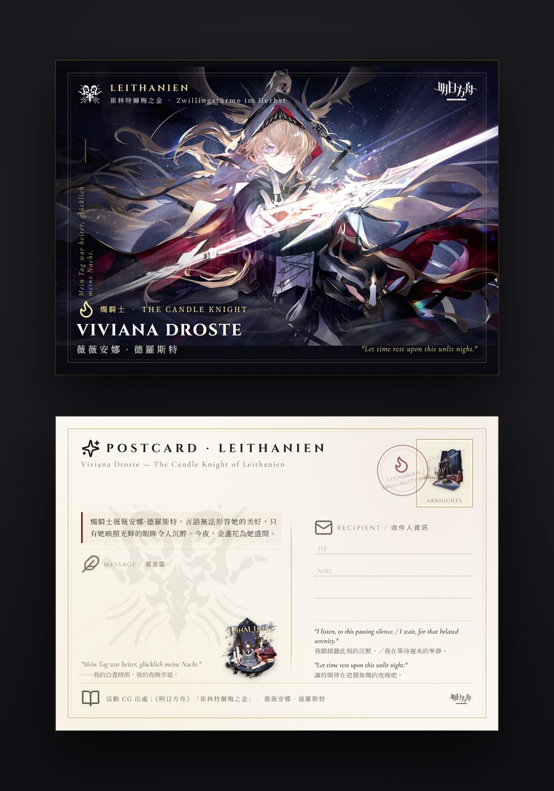
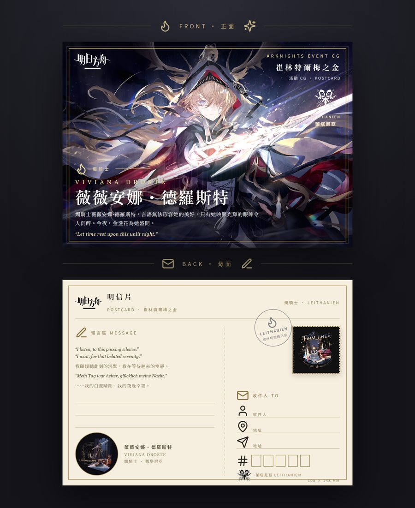
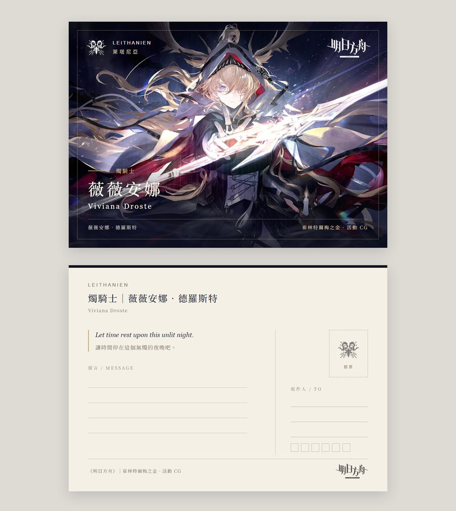

同一組五道實務題 (CG 明信片設計、email 書寫、學測作文、經費配平、時事評論)，分別交給 Claude Opus 5.5、Claude Sonnet 5.5、Gemini 4 Argon、Muse Wonder、GPT-6.1 Sol 作答。以下比較作答品質、事實正確性與成本。
| 題目 | Opus 5.5 | Sonnet 5.5 | Gemini 4 Argon | Muse Wonder | GPT-6.1 Sol |
|---|---|---|---|---|---|
| 數學配平 | 優 改 1 盒歸零 | 待定 0 盒歸零，靠混價假設 | 弱 未歸零，最佳值算錯 | 優 與 Opus 同解，代價列得最完整 | 良 歸零，但改報 11 盒 |
| email 書寫 | 優 查到維修手冊與料號 | 可 注音標錯，信中一句不妥 | 可 多處講得過度肯定 | 良 謹慎、不編造 | 良 謹慎，照片描述最準 |
| CG 明信片 | 優 正背面都完整 | 良 正面佳，背面較弱 | 優 設計最完整，主圖有黑邊 | 可 文字溢出、被遮 | 良 乾淨無瑕疵，但較素 |
| 學測作文 | 優 扣圖最緊 | 良 問題 (二) 字數偏少 | 良 結構完整 | 優 文筆最佳，背面最短 | 優 選材最獨特，未扣圖 |
| 時事銳評 | 良 結構清楚，補了外部資料 | 良 分析細，略超篇幅 | 可 資訊最多，但篇幅超出一倍 | 優 篇幅最準，口吻最在地 | 良 篇幅準、最持平，不夠銳 |
標籤是同一題內的相對評價，不同題之間不可直接比較。五個模型的作答條件不同 (見下節)，Claude 兩個模型可以上網和執行程式，API 三個模型不行，解讀時請把這點算進去。
| 模型 | 呼叫管道 | Prompt 版本 | 可用工具 | 附件處理 |
|---|---|---|---|---|
| Opus 5.5 | Claude Code 子代理 | prompt_App.txt | 讀檔、上網、執行程式 | 自行讀取圖片與 PDF |
| Sonnet 5.5 | Claude Code 子代理 | prompt_App.txt | 讀檔、上網、執行程式 | PDF 無法轉圖，改用文字擷取，作文題沒看到幾米圖 |
| Gemini 4 Argongoogle/gemini-4-argon | OpenRouter API | prompt_API.txt | 無 | 圖片與原生 PDF 直接傳送，每個附件前加檔名標籤 |
| Muse Wondermeta/muse-wonder | OpenRouter API | prompt_API.txt | 無 | 同上 |
| GPT-6.1 Solopenai/gpt-6.1-sol | OpenRouter API | prompt_API.txt | 無 | 同上 (第二輪補測) |
目標依序為：計畫A不超支、計畫B膳費併成 4 張、計畫B餘額歸零、保留 計畫C黃色項目。關鍵卡點在計畫B三張便當要湊出 8,112 元，而單價只能是 5 的倍數且不超過 120。
| 模型 | 單據單價假設 | 計畫B餘額 | 便當個數變動 | 計畫A餘額 | 計畫C餘額 | 個數不動時最佳 |
|---|---|---|---|---|---|---|
| Opus 5.5 | 每張一個單價 | 0 | 0814 的 1 盒改報 0818，另併入計畫A 3 盒 | 480 | 1,429 | 6 |
| Sonnet 5.5 | 同一張可有兩種單價 | 0 | 不變動 | 1,030 | 879 | 51 |
| Gemini 4 Argon | 每張一個單價 | 55 | 不變動 (計畫C拆出一個 80 元便當) | 40 | 1,814 | 55 (有誤) |
| Muse Wonder | 每張一個單價 | 0 | 0814 −1、0818 +4、計畫A批 −3 (與 Opus 同解) | 68 | 1,841 | 51 |
| GPT-6.1 Sol | 每張一個單價 | 0 | 0814 的 11 盒改報 0811 (22→33、21→10) | 1,030 | 879 | 51 |
| 模型 | 第一問 (規格與購買) | 第二問 (英文信) | 問題 |
|---|---|---|---|
| Opus 5.5 | 上網找到 HP 14-fm0xxx 維修手冊，推定上蓋料號 P31088-AB1 並標明是推定；判讀機身色為 Atmospheric blue；建議先嘗試自行裝回 | 實際抓取商品頁確認矛盾，發現 HPS26-25 列的圖檔名是 hc22，可能對應 HPS-22；列 7 項追問 | 無明顯錯誤 |
| Sonnet 5.5 | 有上網，但引用的是其他系列的料號，參考價值低 | 8 項追問，內容完整 | 把 P 鍵注音寫成「ㄆ」(應為「ㄣ」)；第 5 題 “can you declare the package value accordingly” 等於請賣家配合調整報關價值，寄出前應刪除 |
| Gemini 4 Argon | 列了淘寶、殺肉鍵盤等實用管道 | 只有 3 項追問 | 宣稱照片「清楚可見」扣爪白化微裂；斷定 HAC 是精元或群光模具代號；台灣料號後綴寫 -AB0，和 Opus 查到的手冊 (-AB1) 不符 |
| Muse Wonder | 照要求不給料號與價格，判讀處都標示需現場確認 | 6 項追問，指出 HPS 編號是賣家自訂分類 | 信中寫附 3 張照片，實際只有 2 張 |
| GPT-6.1 Sol | 不猜料號；提醒照片不足以判定是哪個部件壞，也可能只是支架脫位，並勸別用膠黏 | 6 項追問，逐張說明附件內容，與實際附件相符 | 文中混入幾個簡體字 (「键」「确认」) |
Opus 的優勢主要來自能上網查官方手冊。在不能上網的條件下，Muse 與 GPT-6.1 Sol 的「不知道就說不知道」比 Gemini 的過度肯定更可靠。
五個模型都交出 HTML，正背兩面齊全。Claude 兩個模型自行截圖檢查；API 三個模型的畫面由我以無頭 Chrome 渲染。







字數以程式依題目規則計算 (中文字與標點各計 1，題目、換行、空白不計)。五個模型都沒有超出限制。
| 模型 | 問題 (一) 上限 80 | 問題 (二) 上限 400 | 背面作文 上限 836 | 選用素材 | 評語 |
|---|---|---|---|---|---|
| Opus 5.5 | 77 | 360 | 714 | 捷運站賣口香糖的老伯／父親 | 結尾把「頭碰頭」「把圖轉正」收回題目，扣圖最緊；自報字數與實算完全一致 |
| Sonnet 5.5 | 62 | 292 | 675 | 賣口香糖的老爺爺、同學阿哲／母親 | 問題 (二) 只用了上限的七成，21 分的題目可能吃虧；作答時沒看到圖 |
| Gemini 4 Argon | 77 | 316 | 696 | 賣玉蘭花的婆婆、主動買花的高中生／父親 | 開頭先描述圖文，結構完整，用語略為制式 |
| Muse Wonder | 72 | 344 | 573 | 校門口賣玉蘭花的阿婆／父親 | 文學性最高，細節最有畫面；背面作文五者最短 |
| GPT-6.1 Sol | 64 | 323 | 733 | 同學被做成嘲笑貼圖／父親 | 論述最成熟，背面以「門」貫穿全篇；但完全沒提到幾米的圖文甲、乙 |
前四個模型的問題 (二) 都選了「路邊年長攤販」當例子，應是受題幹「兜售商品的小販」提示影響。GPT-6.1 Sol 是唯一跳出這個素材的模型。
要求篇幅 1,500 至 2,000 字。字數為中文字與標點的實算值。文中引用的數字 (加料最多 8 份、年費 711 元、優惠到 12/31、「愿秀」門市、會員破 2,000 萬、統一超 9 月營收 314.4 億等) 都已對照新聞原文，五篇都沒有錯。
| 模型 | 字數 | 特色 | 問題 |
|---|---|---|---|
| Opus 5.5 | 2,106 | 七個面向分段清楚，結論「方向合理，手法粗糙」；上網補了 2017 年統一星巴克股權背景並附來源 | 補充的外部資料未經我另外查證 |
| Sonnet 5.5 | 2,358 | 把消費者分成三種客群分析，推測段落標示清楚 | 「店員哭著求大家」是加油添醋，原文只說「心好累」 |
| Gemini 4 Argon | 3,989 | 資訊量最大，價格歧視與會員導流的論點最完整，語氣最衝 | 篇幅是上限的兩倍；結尾的「按讚分享」偏網紅腔 |
| Muse Wonder | 2,173 | 最接近要求篇幅，「心理契約」的論點清楚，用語最像台灣自媒體 (例如「奇檬子」) | 沒有列來源 (API 版 prompt 未強制要求) |
| GPT-6.1 Sol | 2,007 | 立場最持平，主動提醒「營收不是利潤」、董座身家與政策合理性無關；結尾提醒別為難店員 | 偏冷靜分析，「銳評」的力道最弱 |
| 模型 | CG | 作文 | 數學 | 時事 | 合計 tokens | 合計耗時 | |
|---|---|---|---|---|---|---|---|
| Opus 5.5 | 95,886 | 105,729 | 64,898 | 103,935 | 76,903 | 447,351 | 1,027.6 秒 |
| Sonnet 5.5 | 76,848 | 75,639 | 61,828 | 102,079 | 73,728 | 390,122 | 590.7 秒 |
| 模型 | CG | 作文 | 數學 | 時事 | 合計 (USD) | 輸入／輸出 tokens | |
|---|---|---|---|---|---|---|---|
| Gemini 4 Argon | 0.0907 | 0.0279 | 0.0158 | 0.1040 | 0.0545 | 0.2929 | 29,476／23,394 |
| Muse Wonder | 0.1134 | 0.1037 | 0.0868 | 0.3899 | 0.0919 | 0.7858 | 36,955／31,899 |
| GPT-6.1 Sol | 0.0490 | 0.0379 | 0.0284 | 0.1233 | 0.0455 | 0.2842 | 34,771／19,730 |